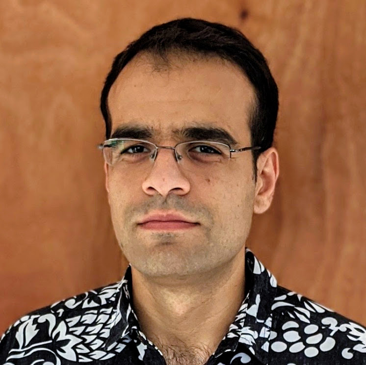
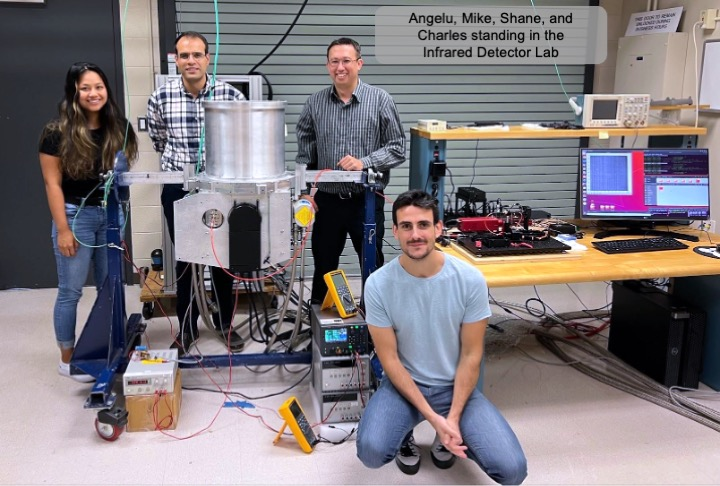
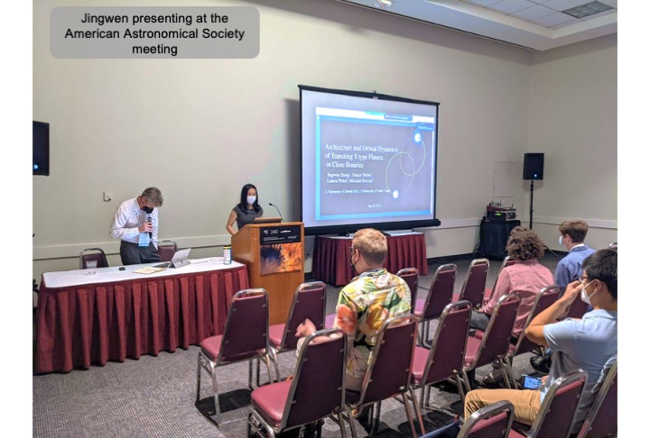
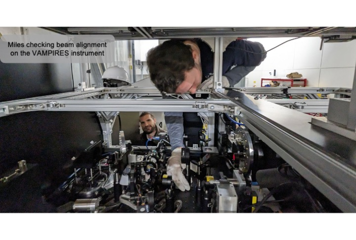
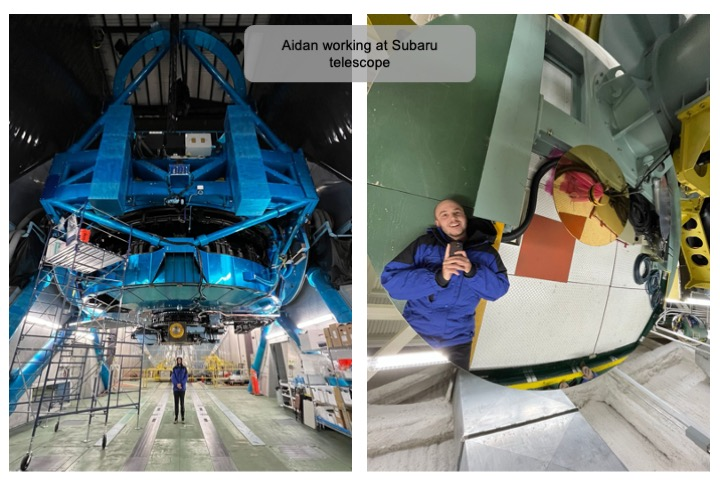
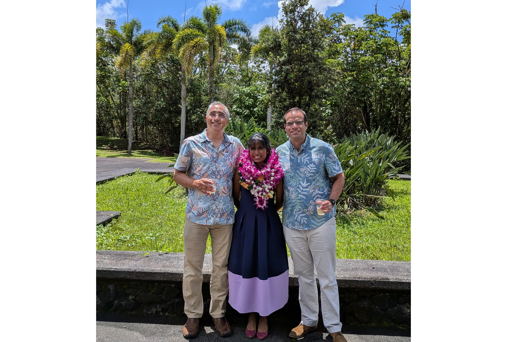
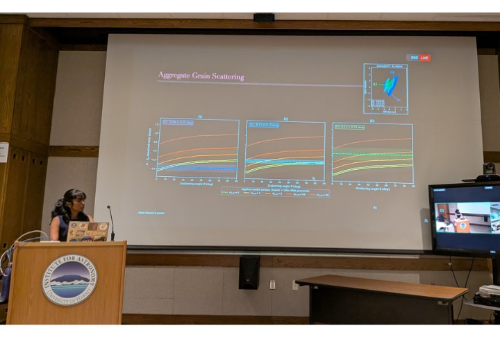

★ About Me ★
 |
|
I'm an experimental astrophysicist working in the field of exoplanet imaging. The goals of my research group are the detection and characterization of , which we pursue by building, developing, and using new instruments. Our main research efforts focus on developing infrared detectors and instrument concepts for the Habitable Worlds Observatory, adaptive optics instrumentation for large ground-based telescopes like Keck and Subaru, and observing disks and planets using the most advanced ground-based telescopes in the world.
Prior to joining the faculty of UC Berkeley, I was an astronomer at the Institute for Astronomy in Hilo, Hawai`i and an optical engineer at NASA's Jet Propulsion Lab. I received a PhD in astrophysics from Caltech and did my undergraduate studies at Columbia.
|
🚀 My Research Group 🚀
Interested potential graduate students are always welcome to contact me. If you are a UC Berkeley undergrad interested in working in my group, please include a CV/resume and transcript in your e-mail correspondence. Regrettably, I am unable to fulfil any requests from high school students.
|
*~ Current Members ~*
*~ Frequent Collaborators ~*
|
*~ Hall of Fame (Former Members) ~*
- Jingyi Zhang (PhD student, 1st-year project)
- Miles Lucas (PhD student, now Brass postdoctoral fellow at U. Arizona)
- Jingwen Zhang (PhD student, now postdoc at UC Santa Barbara)
- Matthew Newland (UH Hilo undergrad, now applying to grad school)
- Chase Urasaki (Masters' student, now PhD student at IfA)
- Sam Walker (PhD student, 2nd-year project)
- Ian Cunnyngham (Masters' student, now in industry)
- Charles-Antoine Claveau (postdoc, now at Berkeley)
- Angelu Ramos (UH Hilo undergrad, now at SMA)
- Aidan Walk (UH Hilo undergrad, now grad student at IfA)
- Kenji Emerson (UH Hilo Postbacc student, now grad student at IfA)
- Savanna Guertin (REU student)
- Leo Neat (REU student, now in industry)
- Megan Davis (REU student, now NSF fellow at UConn)
|
📸 Photo Album 📸
(please be patient, images may take several minutes to load on 28.8k modem)
 |
 |
 |
 |
 |
 |
📚 Teaching 📚
Current and upcoming courses
- Astro journal club seminar (UH Manoa, spring 2025)
Former courses taught / workshops organized
- Mathematical Physics (UH Hilo, Spring 2025)
- Astrophysical Techniques (UH Manoa, Fall 2024)
- Order of magnitude physics (UH Manoa, spring 2024)
- Astro journal club seminar (UH Manoa, spring 2024)
- Computational Physics (UH Hilo, spring 2023, 2021)
- Introduction to Astronomy (UH, winter 2022)
- Introduction to Astronomy (UH Manoa, fall 2021)
- Deep learning for computer vision (UH, spring 2020)
- Direct imaging mini workshop (UH, winter 2019)
- Space optical engineering systems (Caltech, spring 2018)
- Stellar physics, Interstellar medium, Instrumentation Lab (Caltech, 2014-16)
🌌 Outreach 🌌
I regularly participate in public outreach at local schools and community centers.
- Tanabata Block Party (Aohoku Way, August 16 2024)
- Astroday (Prince Kuhio Mall, May 6 2024)
- Astroday (Prince Kuhio Mall, May 6 2023)
- "First images from JWST" (Public talk at Bishop museum, Honolulu, 9 Sept 2022)
- "Infrared Detectors: Beyond JWST" (IfA Public talk, Dec 1, 2021)
- "Starshade formation flying: sensing and control," talk at NASA HQ, April 2, 2021
- "The exciting frontiers of exoplanet exploration" (Public talk, Imiloa Astronomy Center, June 19 2020, Hilo)
- Astroday (Prince Kuhio Plaza, May 2 2020, Hilo)
- "Imaging other Earths with secondhand spy satellites and starshades" (Public talk, UH Manoa college of engineering, March 13 2020, Honolulu)
- Journey through the Universe (Ha'aheo Elementary School, March 13 2020, Hilo)
📡 News Flash!! 📡
- (July 2026) Presenting...*DR.* Maria Vincent! Congratulations to Maria on a successful PhD defense!
- (June 2026) Mike receives PASP "Star Reviewer" award.
- (May 2026) Congratulations to Nour for being appointed faculty at U. Hawaii Institute for Astronomy!
- (April 2026) Congratulations to Maria Vincent for being awarded a NASA Postdoctoral Program Fellowship!
- (Sept 2025) Miles Lucas' paper Dynamical Analysis of the HD 169142 Planet-Forming Disk: Twelve Years of High-Contrast Polarimetry accepted for publication in PASP!
- (August 2025) Congratulations to Jingyi Zhang for successful completion of her 1st-year project and getting an honorable mention for the best project prize!
- (July 2025) Congratulations to DR. Miles Lucas for his successful thesis defense! Off to a postdoc at Arizona!
- (June 2025) Welcome to Nour Skaf, 51 Pegasi b postdoctoral fellow!
- (June 2025) Welcome to Pavan Bilgi, our new Detector Development Postdoctoral Fellow!
- (May 2025) Mike appointed to the Habitable Worlds Observatory's Community Science and Instrument Team
- (March 2025) UHawaii to host its first 51 Pegasi b fellow, rising star Nour Skaf!
- (Feb 2025) Congratulations to Miles Lucas for being awarded the Alan Brass Prize Fellowship in Instrumentation and Technology Development for his postdoc at the University of Arizona!
- (Feb 2025) Our detector development work featured in a NASA Tech Highlight
...for the complete news archives, please visit my Web 2.0 homepage!
✉ E-Mail Me! ✉
E-mail is the best way to reach me:
(first initial)(last name) AT berkeley DOT edu
|